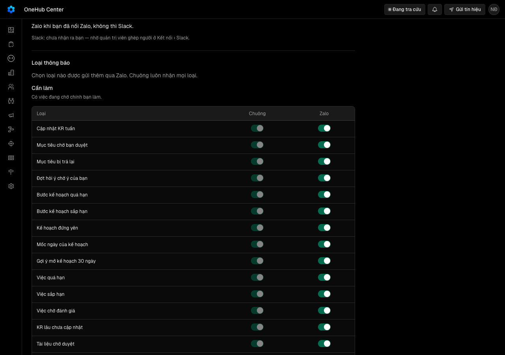
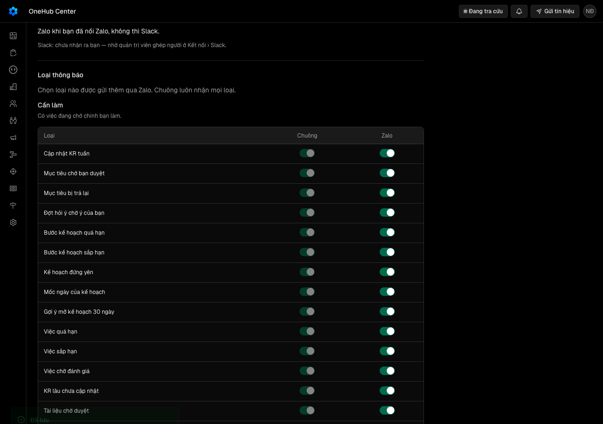
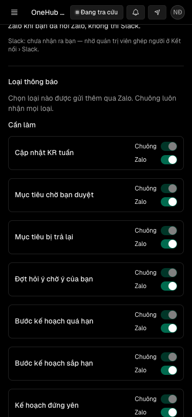
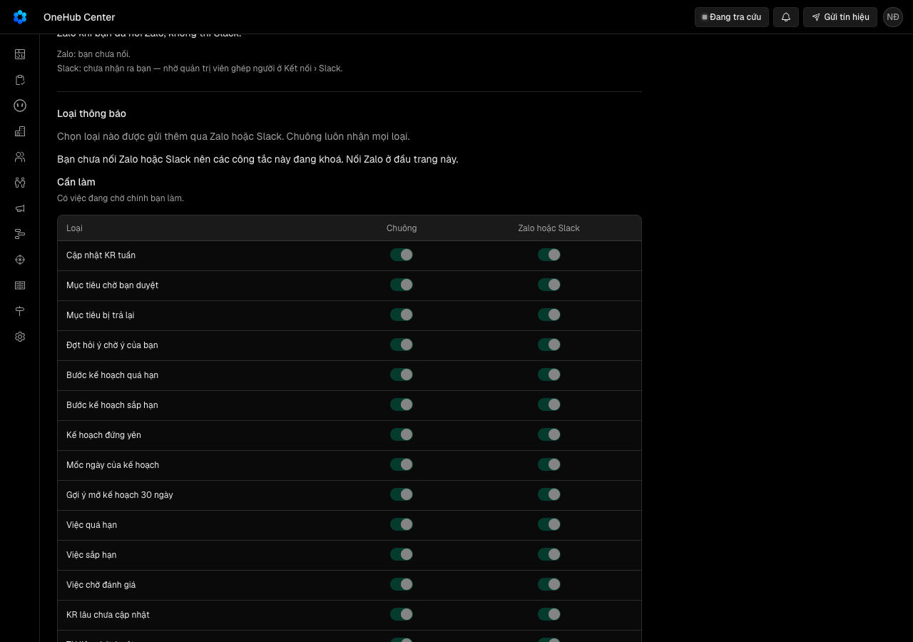

Người dùng CRM thấy thông báo nhận qua Zalo cũng nằm trong chuông, và tự chọn loại nào được đẩy qua kênh nào
Vì sao làm
Zalo và Slack đang là đường đi riêng của tác nhân; rẽ chúng từ cùng bản ghi thì đã đọc ở một nơi là đủ, và người dùng tự chọn để không bị nhiễu.
Đã hứa
- AC-1 — Given bảng loại thông báo, When đọc mức và mặc định kênh ngoài của mọi loại, Then mỗi loại có đúng một mức (Cần làm hoặc Để biết) theo bảng mức của bản thiết kế, có tên loại cả tiếng Việt lẫn tiếng Anh, và có mặc định kênh ngoài — bật cho mọi loại của nhắc buổi sáng, tắt cho bốn loại sự kiện (tác nhân xong, tác nhân cần trả lời, tác nhân hỏng, tín hiệu đổi chỗ); thêm một loại mà không khai mức hay mặc định thì kiểm tra kiểu đỏ gọi tên loại đó, thiếu tên thì bài kiểm đỏ gọi tên loại đó.
- AC-2 — (cross-layer) Given người có Zalo, người có Slack và người không kênh, chưa ai đổi cài đặt loại thông báo, When lượt nhắc buổi sáng chạy và có thông báo sự kiện mới (tác nhân dựng xong, tín hiệu đổi chỗ) cho họ, Then tin Zalo/Slack buổi sáng giống từng chữ và từng đường dẫn bản chụp tin trước vòng cho mọi loại mục nhắc, mỗi mục vẫn có thông báo trong chuông, và không tin nào về thông báo sự kiện được gửi qua Zalo hay Slack.
- AC-3 — (cross-layer) Given người có kênh đã tắt kênh ngoài cho một số loại, When lượt nhắc buổi sáng chạy, Then tin họ nhận không có mục của các loại đã tắt và giữ nguyên chữ của các mục còn lại, mọi mục (kể cả mục đã tắt) vẫn có thông báo trong chuông, và hàng lượt nhắc ghi khoá thông báo của đúng các mục đã gửi; Given mọi mục hôm nay của họ thuộc loại đã tắt, Then không tin nào được gửi và lượt đóng với kết quả «đã tắt hết»; Given họ bật lại, Then lượt sáng sau có lại mục đó.
- AC-4 — (cross-layer) Given người có kênh đã bật kênh ngoài cho một loại sự kiện, When một thông báo loại đó được ghi cho họ (từ tác nhân dựng hay từ tín hiệu đổi chỗ), Then trong vòng hai nhịp của tác nhân họ nhận đúng một tin qua kênh đang dùng (Zalo hay Slack theo lựa chọn kênh hiện có), mang câu chuông hiện bằng tiếng Việt cho chính thông báo đó (tin qua Zalo/Slack chỉ có tiếng Việt, như tin nhắc sáng hôm nay) và đường dẫn tới cùng chỗ; Given thông báo được ghi trước lúc họ bật loại đó hoặc đã quá 30 phút, Then không gửi; Given họ không có kênh nào dùng được, Then không gửi và không lỗi; thông báo trong chuông không đổi trong mọi ca.
- AC-5 — (cross-layer) Given một thông báo sự kiện đủ điều kiện đẩy, When hai nhịp chạy chồng nhau hoặc nhịp chạy lại, Then tin được gửi đúng một lần; Given gửi qua Zalo hỏng, Then không đổi sang Slack, lỗi được ghi trên thông báo, nhịp sau thử lại, và sau ba lần hỏng thì thôi; thông báo trong chuông không bị xoá hay đổi đã đọc trong mọi ca.
- AC-6 — (cross-layer) Given hai người cùng có cài đặt, When một người gọi thủ tục đọc và lưu cài đặt loại thông báo, Then đọc trả mọi loại theo mức, trạng thái kênh ngoài hiệu lực của từng loại (đã lưu hay mặc định) và kênh họ đang dùng (Zalo, Slack, hay không có kèm lý do); lưu chỉ đổi cài đặt của chính họ và có hiệu lực ở lượt đẩy kế; lưu một loại không tồn tại bị từ chối; không có cách nào tắt chuông; người chưa đăng nhập bị từ chối; người vai chỉ OKR đọc và lưu được; một hàng cài đặt mang loại không còn tồn tại không làm hỏng thủ tục đọc hay lượt đẩy.
- AC-7 — Given người đã đăng nhập ở 1280 px và 375 px, When họ mở chuông và bấm «Cài đặt thông báo», Then họ tới mục «Loại thông báo» trên trang Nhắc buổi sáng, thấy hai nhóm Cần làm và Để biết, mỗi loại một dòng với cột Chuông bật và khoá và cột mang tên kênh đang dùng; bật hay tắt một công tắc lưu ngay và báo đã lưu; lưu hỏng thì công tắc trở về giá trị cũ và báo chưa lưu được; không có kênh nào thì mọi công tắc cột kênh khoá và một dòng nói vì sao; chờ tải, lỗi tải hiện đúng như bảng trạng thái của bản thiết kế; trang không cuộn ngang.
- AC-8 — Given lượt nhắc và thông báo sự kiện đã đẩy qua Zalo và Slack trong nhiều ngày, When chủ kho chạy lệnh đối chiếu cho một khoảng ngày, Then lệnh in theo từng ngày số mục nhắc đã gửi qua Zalo và qua Slack, số thông báo sự kiện đã đẩy, số có thông báo tương ứng trong chuông, số lệch kèm mã, và số người có cài đặt khác mặc định; có lệch thì thoát mã 1 gọi tên mục; các số khớp dữ liệu trong kho.
- AC-9 — Given từ điển `CONTEXT.md`, When người đọc các mục về thông báo, Then có mục «Cần làm» và «Để biết» nói đó là mức của thông báo và khác «việc cần làm» đã cấm ở đâu, và mục «Thông báo» nói Zalo hay Slack chỉ chuyển tiếp thông báo theo cài đặt của người nhận, chuông luôn nhận đủ.
Thiết kế
docs/superpowers/specs/2026-10-23-thong-bao-mot-nguon-nhieu-kenh-design.md
Quyết định
- 2026-10-23 · Máy · approach · S1 — Mức, tên và mặc định kênh ngoài của mọi loại thông báo khai một lần trong một bảng ở @crm/validation/thong-bao, kiểu buộc đủ mọi loại.Mặc định kênh và mức là thứ người sẽ muốn chỉnh; một bảng kiểu đủ làm loại mới quên khai thì không biên dịch (E1).
- 2026-10-23 · Máy · approach · S1 — Chia mức theo luật: Cần làm là thông báo chờ chính người nhận làm một việc (duyệt, cập nhật, trả lời, việc quá hạn hay sắp hạn, đối soát lệch); Để biết là báo tin không đòi việc gì — bảng 26 loại ở tệp thiết kế.Pham-vi N4 chỉ nêu hai mức, không nói loại nào thuộc mức nào; luật chia một câu giúp người duyệt gạch từng dòng (E1).
- 2026-10-23 · Máy · approach · S1 — Chuông luôn nhận mọi loại; không có công tắc tắt chuông.Phạm vi N4 đã chốt web luôn bật (AC-6, AC-7).
- 2026-10-23 · Máy · approach · S1 — Mặc định kênh ngoài: mọi loại của nhắc buổi sáng bật, bốn loại sự kiện tắt — người chưa đổi gì nhận đúng như hôm nay.Ngưỡng Cổng Đáng đòi hành vi Zalo hiện có không đổi (E2).
- 2026-10-23 · Máy · approach · S1 — Cột kênh ngoài là một cột mang tên kênh người đang dùng (Zalo hay Slack, do khối «Nhận nhắc việc qua» chọn), không phải hai cột Zalo và Slack.Mỗi người hôm nay nhận qua đúng một kênh (kenhSeDungCua); một cột giữ luật đó và không tạo tin trùng (AC-6, AC-7).
- 2026-10-23 · Máy · approach · S1 — Thông báo sự kiện rẽ ra Zalo hay Slack qua một điểm: nhịp mỗi phút của tác nhân quét thông báo chưa đẩy, không gửi ở nơi ghi.Thông báo tín hiệu ghi ở API, mà API không được gọi Zalo/Slack; một điểm quét phủ mọi nguồn hiện có và sau này (E4).
- 2026-10-23 · Máy · approach · S1 — Đẩy thông báo sự kiện ngay trong một nhịp, không gom vào tin sáng hôm sau.«Kara cần bạn trả lời» chờ người; đợi tới sáng hôm sau thì tin mất nghĩa (E4).
- 2026-10-23 · Máy · approach · S1 — Mỗi thông báo đẩy tối đa một lần: giữ chỗ trước khi gửi, gửi hỏng thì thử lại ở nhịp sau tới ba lần, Zalo hỏng không đổi sang Slack.Luật kênh hiện có cấm đổi sang Slack khi Zalo hỏng; giữ chỗ trước khi gửi chặn tin trùng khi hai nhịp chồng (E5).
- 2026-10-23 · Máy · approach · S1 — Bảng cài đặt là một mục mới trên trang «Nhắc buổi sáng» (trang thông báo riêng của người), chuông có lối tới mục đó; không mở trang mới.Lựa chọn Zalo hay Slack của người đã sống ở trang này; hai cài đặt về cùng một tin phải nằm cạnh nhau (E7, E8).
- 2026-10-23 · Máy · approach · S1 — Thủ tục đọc và lưu cài đặt nằm ở router thông báo; không sửa router Zalo hay mã kênh của tác nhân.Luật 21 của đợt chỉ cho TB2 thêm cổng rẽ ở phần thông báo; mã kênh Zalo/Slack là của làn Mac Studio (E6).
- 2026-10-23 · Máy · approach · S1 — Tin sự kiện qua Zalo/Slack dùng câu tiếng Việt của chuông cho cùng thông báo cộng đường dẫn tới cùng chỗ; khuôn câu của bốn loại sự kiện dời về một nơi app và tác nhân cùng đọc.Tin nhắc sáng qua Zalo/Slack hôm nay chỉ có tiếng Việt; một câu cho một thông báo trên mọi kênh (E4).
- 2026-10-23 · Máy · descope · S1 — Không làm công tắc cả mức, gom nhiều tin sự kiện, giờ yên lặng, hiện mức trên chuông, gộp «Dòng Trợ lý OKR» hay đổi tên trang — ghi ở Out of scope.Thêm các ô đó đẩy hợp đồng quá mười tiêu chí; mỗi ô là một quyết định riêng sau khi có số đo của vòng này.
- 2026-10-23 · Máy · descope · S1 — bỏ design-pass — mục cài đặt dựng hoàn toàn bằng khuôn có sẵn của trang Cài đặt (thẻ, bảng nhỏ, dòng công tắc), không có mảnh mới; ảnh thật của E8 ở 1280/375 cho người ký nhìn ở Cổng Bằng chứngdocs/settings.md đã chốt dạng của dòng công tắc và bảng nhỏ; bản mẫu bấm được cho mục này chỉ lặp lại khuôn đó (E7, E8).
- 2026-10-23 · Máy · approach · S1 — Thông báo sự kiện rẽ ra Zalo hay Slack qua một điểm: nhịp mỗi phút của tác nhân đọc chính bản ghi thông báo chưa đẩy, không gửi ở nơi ghi và không qua hàng AgentTask riêng.Phạm vi N3 đòi kênh rẽ từ cùng bản ghi thông báo; đọc thẳng bản ghi chuông giữ ngưỡng «mọi tin Zalo có bản trong chuông» bằng cấu trúc, và phủ cả nguồn ghi ở API lẫn ở tác nhân (E4).
- 2026-10-23 · Máy · approach · S1 — Tin sự kiện qua Zalo/Slack dùng câu tiếng Việt của chuông cho cùng thông báo cộng đường dẫn tới cùng chỗ; khuôn câu của bốn loại sự kiện dời về một nơi app và tác nhân cùng đọc.Máy chủ không biết ngôn ngữ người chọn — nó chỉ nằm ở cookie trình duyệt (apps/app/lib/locale/server.ts); tin nhắc sáng qua Zalo/Slack hôm nay cũng chỉ tiếng Việt (E4).
- 2026-10-23 · Máy · descope · S1 — Không đẩy qua thư, thông báo trình duyệt hay ứng dụng điện thoại; không tắt chuông theo loại.CRM không có kênh thư, trình duyệt hay điện thoại cho thông báo; phạm vi N4 chốt web luôn bật.
- 2026-10-23 · Máy · descope · S1 — Không thêm nguồn thông báo mới (giao việc, nhắc tên lúc xảy ra); vòng này chỉ rẽ các thông báo đã có ra kênh.Nguồn mới là sự kiện mới phải phát hiện ở nơi khác; khi có, nó đi qua cùng đường đẩy của vòng này mà không sửa gì.
- 2026-10-23 · Người · seal · gate1 —
- 2026-10-23 · Máy · approach · S2 — Câu tiếng Việt của bốn loại sự kiện có một bản cho tác nhân trong @crm/validation, chép đúng chữ của tệp chữ bên app, và một bài kiểm buộc hai bản bằng nhau — thay vì dời hẳn khuôn câu của app sang gói chung.Luật 7 của đợt chỉ cho thêm dòng vào tệp chữ dùng chung của app; dời khuôn câu là sửa dòng của tệp đó, còn bài so bằng nhau (tbk-cau, E4) giữ một câu cho một thông báo.
- 2026-10-23 · Máy · fix · S3 — Hàm đọc và lưu cài đặt ở gói dữ liệu nhận bảng mặc định qua tham số (macDinhDayRa), không tự nhập bảng mức của gói khuôn như kế hoạch ghi.Gói khuôn đã phụ thuộc gói dữ liệu, nên gói dữ liệu nhập ngược gói khuôn là vòng phụ thuộc; người gọi (tác nhân, API) truyền macDinhDayRa của @crm/validation/thong-bao.
Bằng chứng
Các eval
| Eval | Tiêu chí | Loại | Verdict | run_id | verified_at |
|---|---|---|---|---|---|
| E1 | AC-1 | test | PASS | minted-thong-bao-mot-nguon-nhieu-kenh-E1-r1 | 2026-10-23T05:49:35Z |
| E2 | AC-2 | test | PASS | mvkjwbizm4jx | 2026-10-23T05:49:35Z |
| E3 | AC-3 | test | PASS | mvkjwayz1z4t | 2026-10-23T05:49:35Z |
| E4 | AC-4 | test | PASS | mvkjwbclouwl | 2026-10-23T05:49:35Z |
| E5 | AC-5 | test | PASS | mvkjwabdzo6n | 2026-10-23T05:49:35Z |
| E6 | AC-6 | test | PASS | minted-thong-bao-mot-nguon-nhieu-kenh-E6-r1 | 2026-10-23T05:49:35Z |
| E7 | AC-7 | test | PASS | minted-thong-bao-mot-nguon-nhieu-kenh-E7-r1 | 2026-10-23T05:49:35Z |
| E8 | AC-7 | ui-check | PASS | minted-thong-bao-mot-nguon-nhieu-kenh-E8-r1 | 2026-10-23T05:49:35Z |
| E9 | AC-8 | test | PASS | mvkjwapicms7 | 2026-10-23T05:49:35Z |
| E10 | AC-9 | judgment | UNCERTAIN | — | — |
Chi tiết từng eval
PASS E1 · test
AC-1: Given bảng loại thông báo, When đọc mức và mặc định kênh ngoài của mọi loại, Then mỗi loại có đúng một mức (Cần làm hoặc Để biết) theo bảng mức của bản thiết kế, có tên loại cả tiếng Việt lẫn tiếng Anh, và có mặc định kênh ngoài — bật cho mọi loại của nhắc buổi sáng, tắt cho bốn loại sự kiện (tác nhân xong, tác nhân cần trả lời, tác nhân hỏng, tín hiệu đổi chỗ); thêm một loại mà không khai mức hay mặc định thì kiểm tra kiểu đỏ gọi tên loại đó, thiếu tên thì bài kiểm đỏ gọi tên loại đó.
Ran 1 test across 1 file. [31.00ms]
PASS E2 · test
AC-2: (cross-layer) Given người có Zalo, người có Slack và người không kênh, chưa ai đổi cài đặt loại thông báo, When lượt nhắc buổi sáng chạy và có thông báo sự kiện mới (tác nhân dựng xong, tín hiệu đổi chỗ) cho họ, Then tin Zalo/Slack buổi sáng giống từng chữ và từng đường dẫn bản chụp tin trước vòng cho mọi loại mục nhắc, mỗi mục vẫn có thông báo trong chuông, và không tin nào về thông báo sự kiện được gửi qua Zalo hay Slack.
test-run: dropped crm_mvkjwbizm4jx_test
PASS E3 · test
AC-3: (cross-layer) Given người có kênh đã tắt kênh ngoài cho một số loại, When lượt nhắc buổi sáng chạy, Then tin họ nhận không có mục của các loại đã tắt và giữ nguyên chữ của các mục còn lại, mọi mục (kể cả mục đã tắt) vẫn có thông báo trong chuông, và hàng lượt nhắc ghi khoá thông báo của đúng các mục đã gửi; Given mọi mục hôm nay của họ thuộc loại đã tắt, Then không tin nào được gửi và lượt đóng với kết quả «đã tắt hết»; Given họ bật lại, Then lượt sáng sau có lại mục đó.
test-run: dropped crm_mvkjwayz1z4t_test
PASS E4 · test
AC-4: (cross-layer) Given người có kênh đã bật kênh ngoài cho một loại sự kiện, When một thông báo loại đó được ghi cho họ (từ tác nhân dựng hay từ tín hiệu đổi chỗ), Then trong vòng hai nhịp của tác nhân họ nhận đúng một tin qua kênh đang dùng (Zalo hay Slack theo lựa chọn kênh hiện có), mang câu chuông hiện bằng tiếng Việt cho chính thông báo đó (tin qua Zalo/Slack chỉ có tiếng Việt, như tin nhắc sáng hôm nay) và đường dẫn tới cùng chỗ; Given thông báo được ghi trước lúc họ bật loại đó hoặc đã quá 30 phút, Then không gửi; Given họ không có kênh nào dùng được, Then không gửi và không lỗi; thông báo trong chuông không đổi trong mọi ca.
Ran 1 test across 1 file. [248.00ms]
PASS E5 · test
AC-5: (cross-layer) Given một thông báo sự kiện đủ điều kiện đẩy, When hai nhịp chạy chồng nhau hoặc nhịp chạy lại, Then tin được gửi đúng một lần; Given gửi qua Zalo hỏng, Then không đổi sang Slack, lỗi được ghi trên thông báo, nhịp sau thử lại, và sau ba lần hỏng thì thôi; thông báo trong chuông không bị xoá hay đổi đã đọc trong mọi ca.
test-run: dropped crm_mvkjwabdzo6n_test
PASS E6 · test
AC-6: (cross-layer) Given hai người cùng có cài đặt, When một người gọi thủ tục đọc và lưu cài đặt loại thông báo, Then đọc trả mọi loại theo mức, trạng thái kênh ngoài hiệu lực của từng loại (đã lưu hay mặc định) và kênh họ đang dùng (Zalo, Slack, hay không có kèm lý do); lưu chỉ đổi cài đặt của chính họ và có hiệu lực ở lượt đẩy kế; lưu một loại không tồn tại bị từ chối; không có cách nào tắt chuông; người chưa đăng nhập bị từ chối; người vai chỉ OKR đọc và lưu được; một hàng cài đặt mang loại không còn tồn tại không làm hỏng thủ tục đọc hay lượt đẩy.
test-run: dropped crm_mvkjwaxxgtcp_test
PASS E7 · test
AC-7: Given người đã đăng nhập ở 1280 px và 375 px, When họ mở chuông và bấm «Cài đặt thông báo», Then họ tới mục «Loại thông báo» trên trang Nhắc buổi sáng, thấy hai nhóm Cần làm và Để biết, mỗi loại một dòng với cột Chuông bật và khoá và cột mang tên kênh đang dùng; bật hay tắt một công tắc lưu ngay và báo đã lưu; lưu hỏng thì công tắc trở về giá trị cũ và báo chưa lưu được; không có kênh nào thì mọi công tắc cột kênh khoá và một dòng nói vì sao; chờ tải, lỗi tải hiện đúng như bảng trạng thái của bản thiết kế; trang không cuộn ngang.
Ran 8 tests across 1 file. [1.61s]
PASS E8 · ui-check
AC-7: Given người đã đăng nhập ở 1280 px và 375 px, When họ mở chuông và bấm «Cài đặt thông báo», Then họ tới mục «Loại thông báo» trên trang Nhắc buổi sáng, thấy hai nhóm Cần làm và Để biết, mỗi loại một dòng với cột Chuông bật và khoá và cột mang tên kênh đang dùng; bật hay tắt một công tắc lưu ngay và báo đã lưu; lưu hỏng thì công tắc trở về giá trị cũ và báo chưa lưu được; không có kênh nào thì mọi công tắc cột kênh khoá và một dòng nói vì sao; chờ tải, lỗi tải hiện đúng như bảng trạng thái của bản thiết kế; trang không cuộn ngang.







PASS E9 · test
AC-8: Given lượt nhắc và thông báo sự kiện đã đẩy qua Zalo và Slack trong nhiều ngày, When chủ kho chạy lệnh đối chiếu cho một khoảng ngày, Then lệnh in theo từng ngày số mục nhắc đã gửi qua Zalo và qua Slack, số thông báo sự kiện đã đẩy, số có thông báo tương ứng trong chuông, số lệch kèm mã, và số người có cài đặt khác mặc định; có lệch thì thoát mã 1 gọi tên mục; các số khớp dữ liệu trong kho.
test-run: dropped crm_mvkjwapicms7_test
UNCERTAIN E10 · judgment
AC-9: Given từ điển `CONTEXT.md`, When người đọc các mục về thông báo, Then có mục «Cần làm» và «Để biết» nói đó là mức của thông báo và khác «việc cần làm» đã cấm ở đâu, và mục «Thông báo» nói Zalo hay Slack chỉ chuyển tiếp thông báo theo cài đặt của người nhận, chuông luôn nhận đủ.
Phán đoán: Đề xuất của máy là PASS (hai lens PASS, một lens FAIL). Ý (a) và (b) đạt ở cả ba lens; lens operational-feasibility cho rằng ý (c) trượt vì mục «Bot Zalo» của CONTEXT.md (dòng 377-378) còn ghi «chỉ gửi nhắc buổi sáng», trong khi tệp thiết kế cho Zalo chuyển tiếp cả thông báo sự kiện; hai lens còn lại coi câu đó là cũ nhưng không nói ngược. Người quyết.
Vòng verify
- Round 1: E1 đến E9 xanh; E10 (judgment) còn một lens bất đồng nên chờ người ở Cổng 2. Chưa có vòng trả về triển khai. Cột verified_at ghi theo ngày chạy (giờ không đo được từ kết quả máy).
Tài nguyên
| Khối | Tác tử | Token đầu ra |
|---|---|---|
| S4 round 1 | 26 | 52.361 |
1 lượt chấm · tổng 52.361 token
Giới hạn và ngoài hợp đồng
- Công tắc cả mức (tắt hết một mức qua Zalo); gom nhiều thông báo sự kiện thành một tin; giờ yên lặng.
- Hiện mức Cần làm / Để biết trên chuông hay trang Thông báo.
- Chọn Zalo và Slack cùng lúc cho một loại — cột kênh là kênh người đang dùng (Hỏi-2).
- Gộp công tắc «Dòng Trợ lý OKR» vào bảng loại thông báo; đổi tên trang «Nhắc buổi sáng».
- Tắt chuông theo loại; đẩy qua thư, trình duyệt, ứng dụng điện thoại.
- Thông báo tức thời cho sự kiện chưa có thông báo (giao việc, nhắc tên lúc xảy ra) — nguồn mới là việc riêng; khi có, nó đi qua cùng đường đẩy của vòng này.
- Sửa mã kênh trong `apps/agent/agent/channels` (vùng của làn Mac Studio, luật 21 của đợt).
Giao
chưa gộp vào onehub (nhánh production kho khai)
Giá trị
- Câu hỏi phép đo trả lời: [đề xuất] đã đạt «Mọi thông báo đi qua Zalo trong hai tuần đều có bản tương ứng trong chuông; hành vi Zalo hiện có không đổi (ngưỡng đề xuất — chốt ở Cổng Đáng)» chưa? — chưa đo
- Kết quả nào là SỐNG: [đề xuất] Mọi thông báo đi qua Zalo trong hai tuần đều có bản tương ứng trong chuông; hành vi Zalo hiện có không đổi (ngưỡng đề xuất — chốt ở Cổng Đáng) — chưa đo
- Kết quả nào là CHẾT: [đề xuất] chưa đạt «Mọi thông báo đi qua Zalo trong hai tuần đều có bản tương ứng trong chuông; hành vi Zalo hiện có không đổi (ngưỡng đề xuất — chốt ở Cổng Đáng)» khi hết timebox — chưa đo
- Timebox: [đề xuất] 2026-10-29 (mốc Tín hiệu và trang Lộ trình theo kit 2.33) — chưa đo